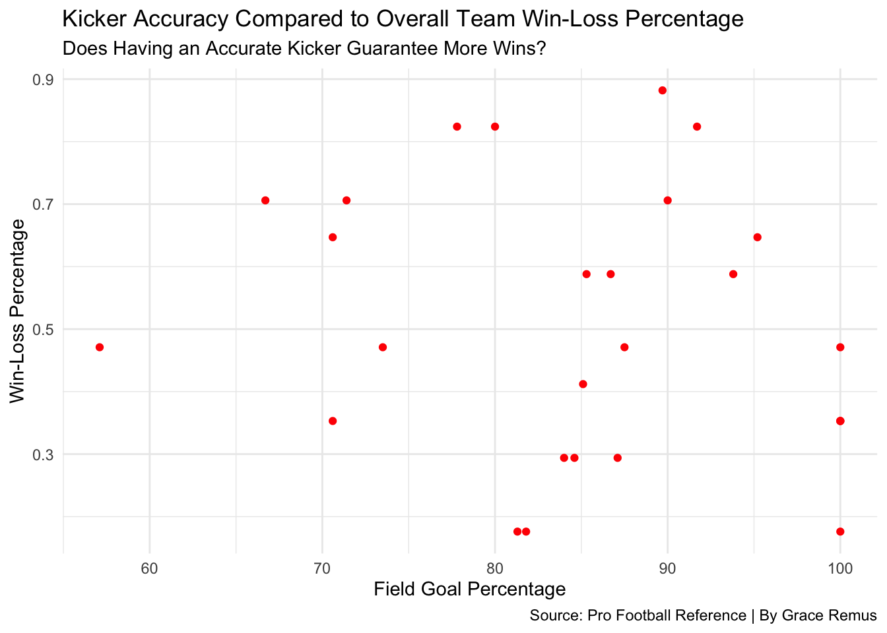
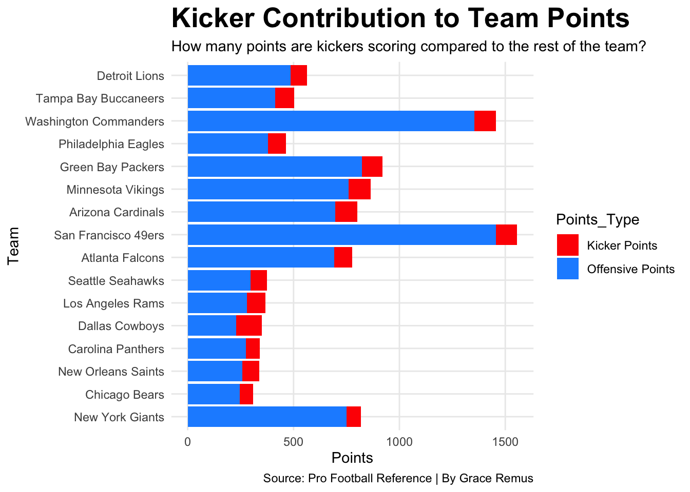
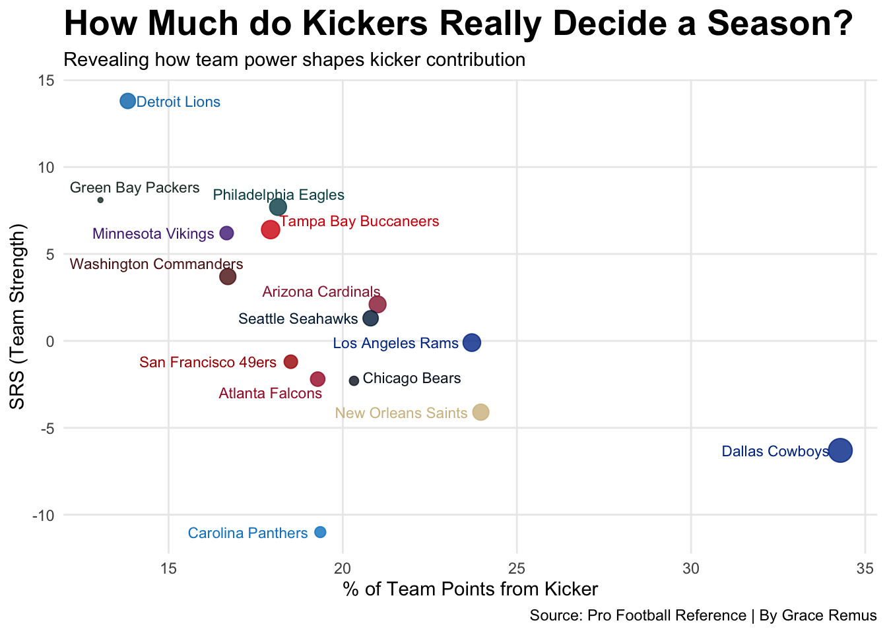

Few positions on an NFL team take more heat than the kicker.
Many games have been decided by one monumental field goal try in the last few minutes of the game. As a Bears fan, I know well enough that a kicker can seemingly make or break a season, but how important are their points to the season as a whole?
The following visualizations examine this exact question and demonstrate how circumstance may cause kickers to take more blame than they should for the outcomes of their seasons. I will specifically be looking at the 2024 NFC, as kickers played a significant role.
Code
library(tidyverse)library(ggrepel)X2024KICKING <-read_csv("data/2024KICKING.csv") |>mutate(Team =case_when( Team =="DAL"~"Dallas Cowboys", Team =="PIT"~"Pittsburgh Steelers", Team =="LAC"~"Los Angeles Chargers", Team =="HOU"~"Houston Texans", Team =="MIA"~"Miami Dolphins", Team =="LVR"~"Las Vegas Raiders", Team =="IND"~"Indianapolis Colts", Team =="PHI"~"Philadelphia Eagles", Team =="LAR"~"Los Angeles Rams", Team =="ATL"~"Atlanta Falcons", Team =="DEN"~"Denver Broncos", Team =="SFO"~"San Francisco 49ers", Team =="NWE"~"New England Patriots", Team =="TAM"~"Tampa Bay Buccaneers", Team =="ARI"~"Arizona Cardinals", Team =="NOR"~"New Orleans Saints", Team =="SEA"~"Seattle Seahawks", Team =="MIN"~"Minnesota Vikings", Team =="WAS"~"Washington Commanders", Team =="BAL"~"Baltimore Ravens", Team =="BUF"~"Buffalo Bills", Team =="DET"~"Detroit Lions", Team =="JAX"~"Jacksonville Jaguars", Team =="CLE"~"Cleveland Browns", Team =="CAR"~"Carolina Panthers", Team =="KAN"~"Kansas City Chiefs", Team =="CHI"~"Chicago Bears", Team =="TEN"~"Tennessee Titans", Team =="CIN"~"Cincinnati Bengals", Team =="GNB"~"Green Bay Packers", Team =="NYG"~"New York Giants", Team =="NYJ"~"New York Jets"))nfc_2024 <-read_csv("data/2024NFC.csv")colnames(nfc_2024)[colnames(nfc_2024) =="Tm"] <-"Team"nfc_2024 <- nfc_2024 |>mutate(Team =gsub("[*+]", "", Team) |>trimws())nfc_kicking_2024 <-left_join(X2024KICKING, nfc_2024, by ="Team") |>filter(Team %in% nfc_2024$Team) |>filter(`FG%`>1)ggplot(nfc_kicking_2024, aes(x =`FG%`, y =`W-L%`)) +geom_point(color ="red") +labs(x ="Field Goal Percentage",y ="Win-Loss Percentage",title ="Kicker Accuracy Compared to Overall Team Win-Loss Percentage",subtitle ="Does Having an Accurate Kicker Guarantee More Wins?", caption="Source: Pro Football Reference | By Grace Remus" ) +theme_minimal() +theme(plot.title =element_text(size =15, face ="bold"), panel.grid.minor =element_blank() )

If a kicker “makes or breaks” the season, then the teams with the most accurate kickers should cluster toward the top of the graph. But that is not the reality. In fact, this graph demonstrates that there is little correlation at all between an accurate kicker and a winning team.
We can also see that a shaky kicker doesn’t automatically ruin a season. Even the teams with less accurate kickers have better win-loss percentages than teams with significantly more accurate feet behind the ball.
But that can’t be, right? Thousands of screens across America have been turned off in stunned silence after a missed field goal. The reverberations of the ball off the uprights have caused football fans everywhere to lose sleep. There has got to be a bigger effect.
Let’s try another visual, this time looking at how many points the kickers are responsible for in comparison to the rest of the team.
Code
library(tidyverse)nfc_kicking_2024 <- nfc_kicking_2024 |>mutate(kicker_PTS = FGM_total *3,other_PTS = TeamPts - kicker_PTS)nfc_long <- nfc_kicking_2024 |>pivot_longer(cols =c(other_PTS,kicker_PTS),names_to ="Point Totals",values_to ="Points")ggplot(nfc_long, aes(x =reorder(Team, TeamPts), y = Points, fill =`Point Totals`)) +geom_col() +coord_flip() +scale_fill_manual(values =c("Kicker Points"="red", "Offensive Points"="dodgerblue"),labels =c("Kicker Points", "Offensive Points")) +labs(title ="Kicker Contribution to Team Points", subtitle ="How many points are kickers scoring compared to the rest of the team?", caption="Source: Pro Football Reference | By Grace Remus", x ="Team", y ="Points") +theme_minimal() +theme(plot.title =element_text(size =20, face ="bold"), panel.grid.minor =element_blank() )

In the 2024 season across the board, it is clear that the majority of points scored are coming from offensive players, not the kickers. While the number of points scored by the kicker was fairly consistent, the variations in the ratio compared to offensive points shed light on when kickers may truly play a more important part in a team’s success.
The low scoring chunk of teams all have kickers that scored about the same amount as the high scoring teams, meaning teams that have a less effective offense rely more on their kickers to score them points.
The next visualization goes a little deeper into what kicker performance meant for each team in the NFC in 2024.
Code
nfc_kicking_2024 <- nfc_kicking_2024 |>mutate(kicker_pct = (kicker_PTS / TeamPts) *100) |>filter(FGA_total >20)team_colors <-c("Dallas Cowboys"="#003594","Philadelphia Eagles"="#004C54","Washington Commanders"="#5A1414","New York Giants"="#0B2265","Detroit Lions"="#0076B6","Minnesota Vikings"="#4F2683","Green Bay Packers"="#203731","Chicago Bears"="#0B162A","Tampa Bay Buccaneers"="#D50A0A","New Orleans Saints"="#D3BC8D","Atlanta Falcons"="#A71930","Carolina Panthers"="#0085CA","San Francisco 49ers"="#AA0000","Los Angeles Rams"="#003594","Seattle Seahawks"="#002244","Arizona Cardinals"="#97233F")ggplot(nfc_kicking_2024, aes(x = kicker_pct, y = SRS, size = kicker_PTS, color = Team)) +geom_point(alpha =0.8) +geom_text_repel(aes(label = Team), hjust =1.1, vjust =0.5, size =3) +scale_color_manual(values = team_colors, labels = nfc_kicking_2024$Team) +labs(title ="How Much do Kickers Really Decide a Season?", subtitle ="Revealing how team power shapes kicker contribution", caption="Source: Pro Football Reference | By Grace Remus",x ="% of Team Points from Kicker",y ="SRS (Team Strength)",size ="Kicker Points",color ="Kicker" ) +theme_minimal() +theme(legend.position ="none" ) +theme(plot.title =element_text(size =20, face ="bold"), panel.grid.minor =element_blank() )

This tells us a lot about how important kickers are to each individual team. The teams in the middle re-enforce the earlier sentiment that kickers have little effect on overall team strength, but there are interesting stories in the anomalies.
The Cowboys stick out as they have a strong kicker based on points scored. However, that kicker handled almost 35% of his team’s points. Even the best kicker in the world cannot make up for a lack of scoring by the rest of his team.
The Lions show the flip side of that coin. Their team’s strength was high, and their kicker’s contribution was low, meaning that they were ending most of their drives in touchdowns rather than field goals, which ultimately resulted in a more successful season.
The sad little point at the bottom, the Carolina Panthers, are an interesting case of struggling so badly to get into scoring range that their kicker couldn’t be a factor in the season’s outcome at all.
In conclusion, be nicer to your kickers. Their points being scored in more high-stakes situations is caused by a failure in the offense to perform as they should. If the offense can’t do their job, neither can the kicker, and even if the kicker didn’t, it still would not have a significant outcome on the season’s result.